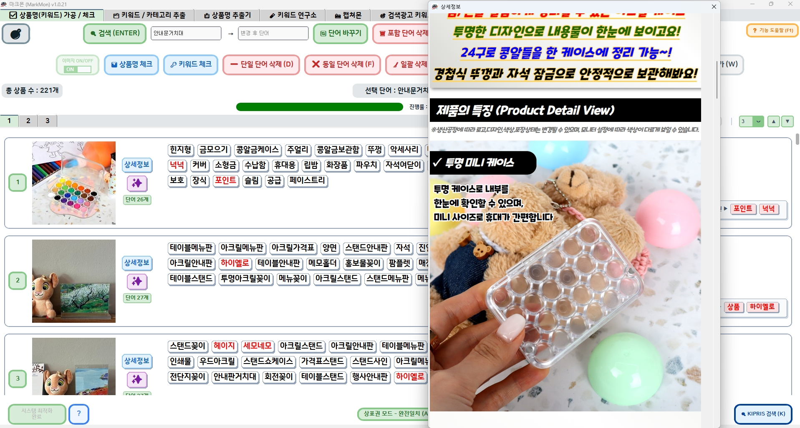
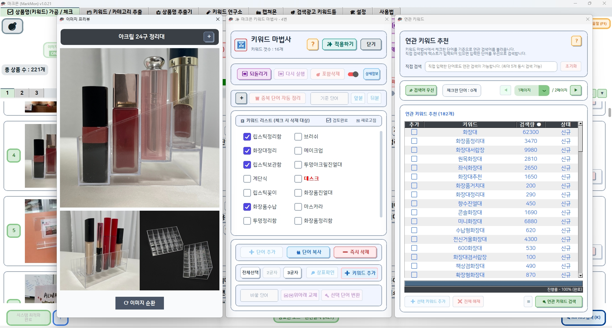
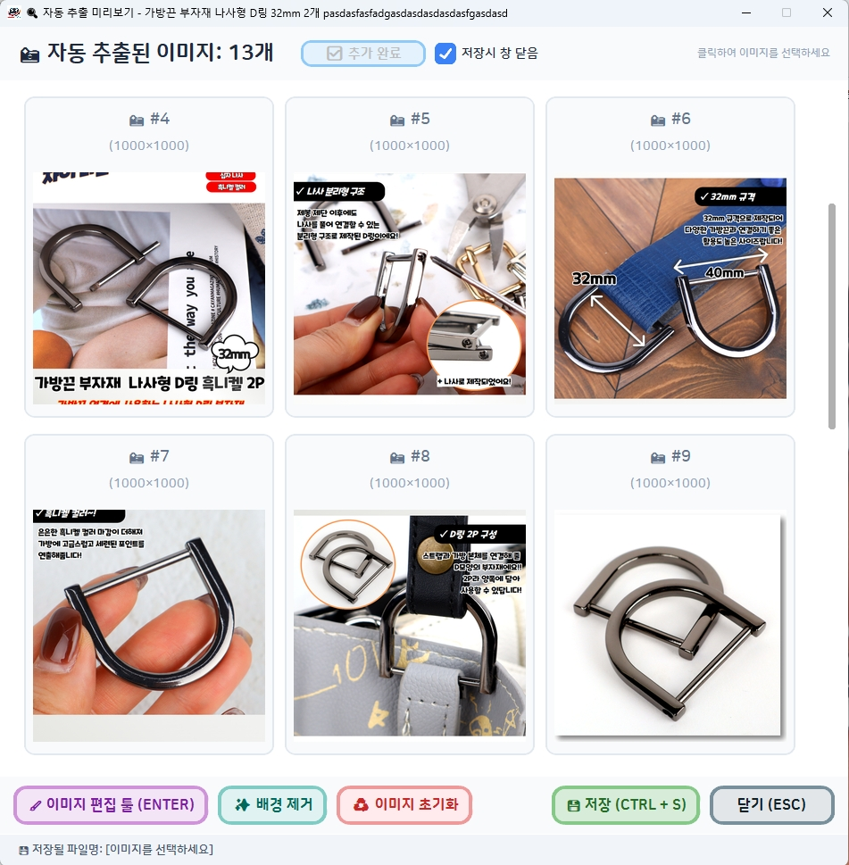

지재권, 상표권 터진 뒤엔 늦습니다

이 끔찍한 위기 속에서 셀러를 안전하게 보호해 줄
가장
확실하고 든든한 방패가 되어드리겠습니다.
예방이 제일 쉬운 방법입니다.
상표권, 검색해보셨나요?
기존엔 하나하나 찾으셨나요?
상표권 검색이라도 해보는 분들은 그나마 다행입니다. 실제로는 찾는 것조차 하지 않거나,
경험으로 쌓인 금지어 몇 개만 떠올리며 걸러내는 경우도 많습니다.
또 검색해도 어떤 걸 봐야 하지, 어디까지 확인해야 하지 막막해지기 쉽습니다.
찾기 어렵고, 확인은 더 어렵습니다
하나씩 찾다 보면 확인 흐름이 길어집니다
검색해도 무엇을 봐야 할지 막막할 수 있습니다
올리기 전에 한 번 더 확인하는 편이 가장 쉽습니다
상표권 침해 예방,
가장
중요한 '키워드'에서 시작됩니다.
소싱(가공) 시 가장 공들이는 것이 키워드인데, 왜 상표권 검토는 소홀히 하시나요?
나도 모르게 지나칠 수 있었던 상표권 침해 위험, 마크몬은 셀러가 가장 많이 접하는 키워드 데이터 그 자체에 집중하여 가장 직관적인 해결책을
제시합니다.

단건 검색은 그만
한
번에 최대 3,000행까지 대량 확인.
AI 토큰 비용이나 검색 수 제한 때문에 망설이지 마세요.
마크몬은 AI를 사용하지 않아 불필요한 토킹 비용이 일체 없으며, 사용 횟수 또한 무제한입니다.
엑셀 업로드 한 번으로 최대 3,000행의 키워드를 동시에 분석하고, 위험 발견 시 실시간으로 즉시 수정/삭제가 가능합니다.
※ 대량의 엑셀 데이터 업로드 시 원활한 이용을 위해 컴퓨터 사양(권장 사양 이상)이 뒷받침되어야 합니다.
불필요한 기능은 과감히 버리고,
한 화면에 모든 것을 담았습니다.
지식재산처 DB 기반의 정확한 데이터를 제공하며, 거추장스러운 여백 없이 필요한 정보를 꽉 차게 배치했습니다. 여러 페이지를 오갈 필요 없이, 상표의 출원번호, 상품분류 코드, 지정상품정보 등 복잡한 내용을 하나의 직관적인 인터페이스에서 즉시 확인할 수 있습니다.
- 100% DB 매칭: 허위 결과 노출 확률 0%
- 직관적인 한눈 뷰: 여러 번 클릭하며 페이지를 오갈 필요 없이 즉시 확인
- 쾌적한 반응성: 즉각적인 데이터 결과
- 지정상품정보 검색: 지정상품정보 내에서 개별 검색 기능 제공


보고, 지우고, 고치고
바로 가공하세요.
상세페이지를 작업 화면 옆에서 바로 확인하면서 가공할 수 있습니다.
어떤 문구가 들어가 있는지, 어떤 표현을 지워야 하는지 눈으로 보며 바로 수정할 수 있어 훨씬 편합니다.
필요한 내용은 추가하고, 불필요한 부분은 삭제하고, 어색한 표현은 바로 고치면서 작업 흐름을 끊지 않고 이어갈 수 있습니다.
듀얼모니터? 당연히 됩니다.

키워드 작업의 핵심,
올인원 가공도구 키워드 마법사
키워드 정리, 비교, 선별까지 한 번에 이어갈 수 있는 강력한 작업 도구입니다.
- 키워드 정리: 필요한 표현만 빠르게 선별
- 즉시 비교: 후보 키워드를 한눈에 비교
- 빠른 판단: 남길 표현과 제거할 표현을 바로 결정
- 강력한 작업성: 키워드 작업만으로도 높은 활용도를 제공
정리부터 선별까지 한 번에 이어갈 수 있습니다.



직관적인
블랙리스트 & 화이트리스트.
이 기능은 단순히 보기 좋게 나누는 기능이 아닙니다. 사용자가 직접 골라낸 정말 위험한 단어는 블랙리스트로,
그래도 비교적 안전하게 관리할 단어는 화이트리스트로 따로 저장해두는 기능입니다.
한번 정리해두면 다음 작업에서도 같은 기준으로 빠르게 걸러낼 수 있어, 매번 처음부터 다시 찾고 고민하는 번거로움을 크게 줄여줍니다.
- 블랙리스트: 직접 골라낸 위험 단어를 따로 모아 반복 노출을 빠르게 차단
- 화이트리스트: 비교적 안전하게 관리할 단어를 저장해 작업 기준을 일정하게 유지
- 반복 작업 단축: 다음 상품 작업에서도 같은 기준으로 더 빠르게 분류

엑셀 업로드 없이도
즉시 상표 정보를 확인하세요.
번거롭게 파일을 업로드하지 않아도 됩니다. 검색이 필요한 상품명이나 키워드를 바로 입력해
상표권 정보를 빠르게 확인할 수 있습니다.
하나씩 다시 찾는 과정이 부담스러울 때, 급하게 확인이 필요한 단어가 있을 때,
가장 빠르게 확인 흐름을 이어갈 수 있는 기능입니다.
생각난 표현을 바로 넣어보고, 필요한 정보만 빠르게 확인하면서 다음 작업으로 자연스럽게 넘어갈 수 있습니다.
💡 필수 참고 사항:
정확하고 빠른 상표권 매칭과 검색을 위해
 는 필수적인 선결 조건입니다.
는 필수적인 선결 조건입니다.
원활한 검색을 위해 하단 버튼을 통한 최적화를 필수로 진행해 주세요.

마크몬에 내장되어 있는 강력한 이미지도구 캡쳐몬!
상품 이미지 정리부터 편집, 저장까지 한 흐름으로 처리합니다.
- 대상 추출: 필요한 이미지를 빠르게 선별
- 이미지 자동추출: 상품별 이미지를 불러와 작업 시간을 단축
- 즉시 편집: 자르기와 영역 지정으로 원하는 부분만 정리
- 후처리 일괄화: 배경 제거, 지우기, 모자이크까지 한곳에서
- 파일 정리: 상품번호, 상품코드, 상품명 기준으로 저장 관리




그 외에도 편리한
다양한 기능들이 준비되어 있습니다.
사용자의 업무 효율을 극대화하기 위한 여러 가지 추가 기능들을 만나보세요. 아래 화살표를 눌러 마크몬의 다양한 활용법을 확인하실 수 있습니다.
- 키워드 / 카테고리 추출: 키워드와 카테고리를 자동으로 빠르게 추출합니다.
- 상품명 추출기: 원본 상품명을 기준으로 상품명을 추출합니다.
- 키워드 연구소: 키워드들을 분석하여 작업 효율을 높여줍니다.
- 검색광고 키워드툴: 네이버 검색광고 키워드툴 기능을 이식했습니다.
- 설정 탭 기능: 마크몬의 심장부 입니다. 모든 기능을 이용하기 위해서 필수로 세팅이 필요합니다.


실제 작동 화면으로
마크몬을 확인해보세요.
핵심 기능 위주로 구성된 시연 영상을 통해 마크몬의 정확한 결과 도출과 실시간 분류 가공 과정을 미리 확인해 보세요. 영상에 담기지 않은 더 강력하고 다양한 편의 기능들은 직접 설치하여 경험하실 수 있습니다.
(※ 검색해야 할 결과 데이터가 많을수록 속도에 다소 차이가 발생할 수 있습니다.)
📽️ 유튜브에 각 기능별 상세 가이드 영상이 준비되어 있으니 참고해 보세요.
공식 유튜브 가이드 보러가기
"셀러의 마음은 셀러가 가장 잘 압니다."
제작자가 매일 직접 사용하는 프로그램
마크몬은 단순한 판매용 소프트웨어가 아닙니다. 현업 셀러인 제작자가 본인의 스토어를 안전하게 지키기 위해 직접 개발하고,
지금 이 순간에도 매일 사용하며 다듬고 있습니다.
여러분의 소중한 의견을 바탕으로 새로운 기능들이 끊임없이 업데이트될 예정입니다.

지금 바로 가장 정확한
상표 검색을 경험해보세요.
클라우드에 의존하지 않는 안전한 설치형 프로그램으로, 데이터 유출 걱정 없는 마크몬을 경험해 보세요.
| 구분 | 최소 사양 | 권장 사양 (★) | 비고 |
|---|---|---|---|
| 운영체제 | Windows 10 (64-bit) | Windows 11 (64-bit) | 최신 업데이트 권장 |
| CPU | Intel Core i3 / Ryzen 3 | Intel Core i5 / Ryzen 5 이상 | 멀티스레드 성능 중요 |
| RAM (메모리) | 8 GB | 16 GB 이상 | 대용량 원본 로딩 시 필수 |
| 저장공간 | 1 GB 여유 | SSD 장착 권장 | I/O 속도 영향 |
| 해상도 | 1280 x 720 (HD) | 1920 x 1080 (FHD) | 넓은 작업 화면 권장 |
| 인터넷 | 100 Mbps | 500 Mbps 이상 (Gigabit) | 서버 통신 및 다운로드 |